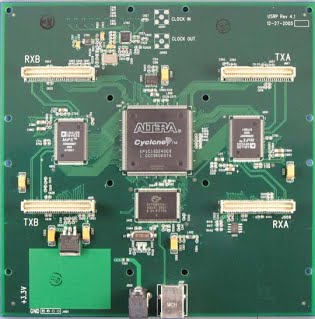
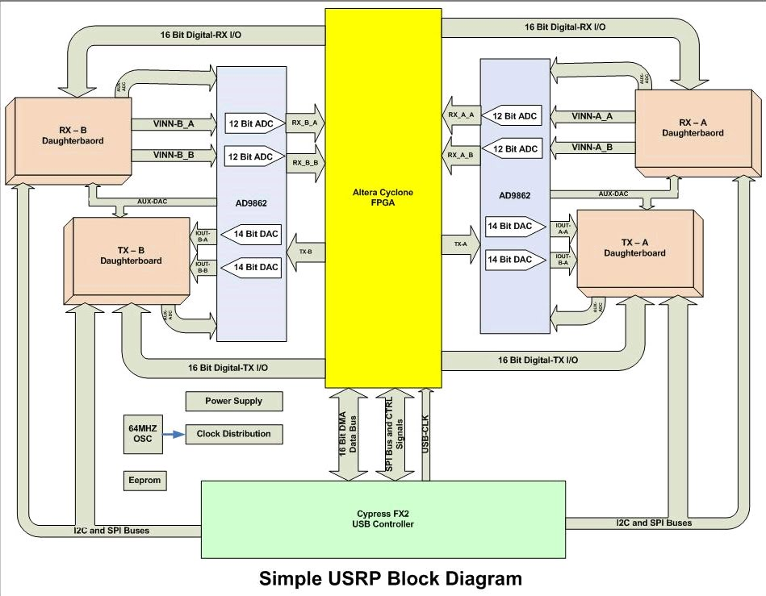
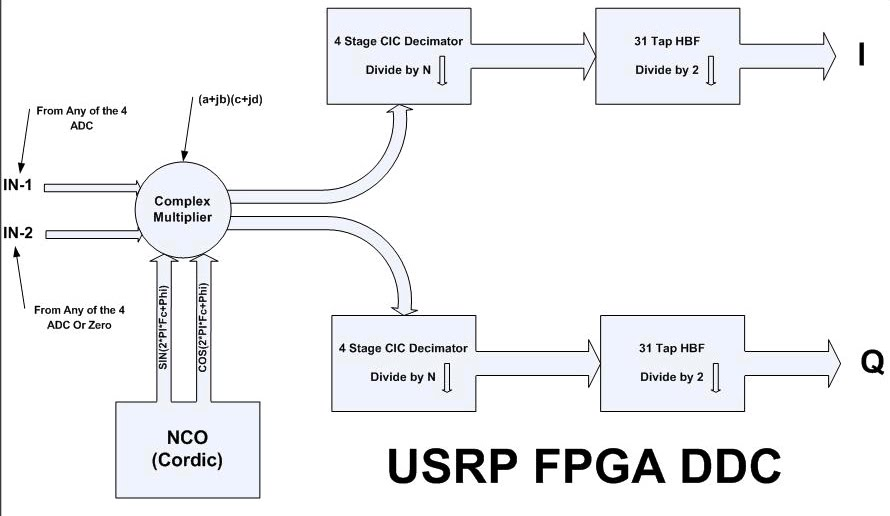
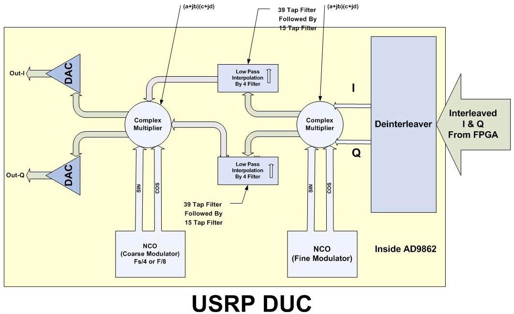

USRP 简介
USRP 简介
软件无线电平台，或 USRP (发音 usurp) 是为了让一般计算机能够充当宽带的软件无线电平台。 从本质上讲，用来充当无线通信系统的数字基带和中频（IF）。
USRP 的基本设计逻辑是所有的信号处理诸如调制、解调由通用计算机来担当。 所有的高速过程诸如上变频、下变频、抽取，及插入由 FPGA 来承担。
USRP 真正的价值是它让工程师，设计者花费极小的费用和精力。一个由开发者和用户构成的巨大的社区贡献了一个丰富的代码库，提供了很多具有实用价值的软件和硬件的应用实例。灵活多变的硬件，开源软件以及经验丰富的社区用户结合在一起使其成为一个理想的开发软件无线电的平台。
USRP 母板
USRP 有 4 路12 位高速模数转换器（ADCs)，采样速度可达 64MSamples/sec。4 路 14 位高速数模转换器(DACs), 采样速度可达 128MSamples/sec。这些 4 入 4 出通道同 Altera 公司的 Cyclone EP1C12 FPGA 相连。FPGA 相应地同 Cypress 公司的 USB2 接口芯片 FX2 相连，然后连接至计算机相连. USRP 同计算机通过高速的 USB2 接口相连，不能用 于USB1.1 接口。
因此，理论上，当采样真实信号时，系统具有 4 路输入 4 路输出。但是，现实中常用它处理复合采样的（IQ）信号，这样会呈现更多的灵活性（和带宽）。 因此把它们配对，便可形成两对复合输入两对复合输出。

ADC 部分
母板上有四路高速 12 位 AD 转换器。采样速率可达 64MS/s。理论上，它的带宽可达 32MHz。AD 转换器允许的带通采样信号可达 200MHz。如果容忍损失一些分贝的话，它的中频频率可高达 500 MHz。然而，如果对载波带中频的信号采样大于 32MHz，波形便会产生混叠（aliasing）失真，因此有价值的带宽便是处于 -32 MHz 到 32 MHz 之间。明了这点很有意义，例如不必依赖射频前端去听 FM 电台。总之被采样的信号频率越高，时漂（jitter）致其信噪比（SNR）越低。100 MHz 是推荐的上限值。
ADCs 峰值对峰值的量程范围是 2V，其输入是阻值为 50 欧姆的差分输入，其功率为 10 mW 或 10 dBm 。它有一个位于 ADCs 流程前的可编程增益放大器（PGA)，其目的是在信号微弱的情况下，放大其信号以便有效的利用整个 ADCs 的量程。 PGA 最大可达 20dB。如果把其（PGA)增益设定为零，满量程的输入便是峰值到峰值 2V 差分信号；如果把其增益设定为 20 dB, 仅仅 0.2 V p-p 的差分输入便可达其满量程。 PGA 是可编程的。
如果信号是交流耦合的，便不必提供直流偏置只需把内部缓冲打开即可。它便可提供大概 2V 的偏置。如果信号是直流耦合的，在输入的正负两端必须提供一个 VCC/2（1.65V）的直流偏置，而且其内部缓存必须关闭。最后，ADC VREF 提供的基准电压是精确的 1V。
AD9862 Datasheet - Mixed-Signal Front-End (MxFE™) Processor for Broadband Communications - AD9860/AD9862
DAC 部分
在发射链路，也有四路高速的 14 位 DA 转换器。DAC 的时钟频率是 128MS/s，因此奈奎斯特频率可达 64MHz。然而，选择低于其值是为了容易滤波。一个可行的选择范围是从 DC 到 44MHz。DACs能够提供 1V 峰值、最大 50 欧姆的差动负载，驱动功率 10mW（或者说 10DBm）。DAC 之后也有一个 PGA，提供最大 20dB 的增益，它也是可编程序的。DAC 的信号（IOUTP_A/IOUTN_A 和 IOUTP_B/IOUTN_B）都是电流型的，其变化可在 0 到 20 mA 之间。通过电阻可以将其变为差分电压。
AD9862 Datasheet - Mixed-Signal Front-End (MxFE™) Processor for Broadband Communications - AD9860/AD9862
辅助模拟量输入/输出通道
有八个可由软件读取的辅助模拟输入通道连接到低速的10 位 ADC 输入（标识为： AUX_ADC_A1_A, AUX_ADC_B1_A, AUX_ADC_A2_A, AUX_ADC_B2_A, AUX_ADC_A1_B, AUX_ADC_B1_B, AUX_ADC_A2_B, 和 AUX_ADC_B2_B）。其速率可达 1.25 MSPS 带宽大致为 200 KHz。这些模拟通道用于测量 RSSI （接收的信号强度指示），温度，偏置电位等。
另外，有八个模拟输出通道同低速的 8 位 DAC 输出相连。它们是 AUX_DAC_A_A，AUX_DAC_B_A，AUX_DAC_C_A，AUX_DAC_A_B，AUX_DAC_B_B 和 AUX_DAC_C_B。这些 DACs 能够用来提供各种控制用电压，诸如外部可变增益放大器的控制。还有两个由 12 位的 ∑-Δ 型调制器和带有外部简单的低通滤波器组成的 DACs（AUX_DAC_D_A 和 AUX_DAC_D_B）。
USRP 母板上的连接器(RXA 和 TXA)共享一组四模拟输出 (用于 RXA 和 TXA 的 AUX_DAC_A_A ～ AUX_DAC_D_A)，和其相应的两个独立的模拟输入通道 (AUX_ADC_A1_A 和 AUX_ADC_B1_A 用于 RXA； AUX_ADC_A2_A 和 AUX_ADC_B2_A 用于 TXA)。相同地，RXB 和 TXB 也同理。还有一个 AUX_ADC_REF，如若需要，它可用来为增益设置提供基准电压。
辅助数字量输入/输出通道
USRP 母板具有高速的 64 位数字 I/O 端口。它们被分为两组（32 位用于 IO_RX 另外 32 位用于 IO_TX）。这些数字 I/O 管脚同子板的接口连接器（RxA, TxA, RxB 和 TxB）相连。每个连接器都有一个 16 位的数字 I/O 位。它们可由软件读写 FPGA 的一些特殊寄存器来控制，而且每个数字 I/O 位可独立被配置为数字输入或输出。
这些管脚中的一些用来控制子板的特殊的操作诸如：控制射频输入端口的选择、处于自动发射/接收状态、控制给不同的发射/接收（TX/RX）部件的电源供给、锁相频率的侦测等。它还可以用来实现自动增益控制（AGC），同逻辑分析仪一起它对于诊断FPGA的实现很有帮助。
FPGA
理解 USRP 上 FPGA 是如何工作是 GNU Radio 用户最重要的部分。正如下图所示，所有的 ADCs 和 DACs 都同 FPGA 相连。FPGA 是 USRP 的核心关键。它基本功能是实现对数字宽频信号处理的算法，压缩数据速率以迎合 USB2.0 传输的要求。FPGA 同 USB2 的接口芯片（Cypress FX2）相连。所有的一切（FPGA 内部电路逻辑和 USB 控制器）都可通过 USB2 总线进行编程控制。

标准的 FPGA 配置包含由四阶级联积分梳状滤波器（CIC filters）构成的数字下变频。级联积分梳状滤波器（CIC filters)是仅仅利用加法器和延时器（寄存器）来构成的高效滤波器。鉴于频谱整形和带外信号抑制的需求，完整的数字下变频（DDC）的过程是利用抽头系数为 31 的半带滤波器（31 Tap HBF）与联积分梳状滤波器（CIC Filter）级联在一起完成的。 标准的 FPGA 配置包含两个完整的数字下变频器。同时还有另一种配置是包含四个不带半带滤波器的数字下变频器，它可用来接收独立的1，2 或4路输入信号的。
在由四个 DDC 构成的构建中，接收链路（RX path）有四个 ADCs 和 四个 DDCs。每个 DDC 有两个输入：I 和 Q。四个 ADCs 中的任何一个都可被连接到四个 DDCs 的两个输入 I 或 Q 中任何一个中去。这使得 ADCs 采样数据流具有多通道选择功能。
下图是 USRP 数字下变频原理框图。

数字下变频 DDC 工作原理如下，首先，变换信号从中频（IF）到基频。其次，它抽取（decimate）信号使得其速率迎合 USB2 ，同时也符合计算机的处理速度。复合输入信号（IF）通过同不同次幂的恒定频率相乘。其结果产生仍就复合但中心频率为零的信号（基频）。然后对信号进行系数为 N 的抽取。
抽取转换器（Decimator）可被理解为是低通滤波器加采样降频器。假设抽取系数是N，从数字频谱特性观察，低通滤波器所选择的带宽是 [-Fs/N, Fs/N]，所谓使采样率降低就是把频谱从[-Fs, Fs] 降到 [-Fs/N, Fs/N]。因此可以说，把数字信号的带宽通过系数 N（抽取）变窄。
言及带宽的概念，通过 USB 系统可以支持 32MB/sec。所有通过 USB 接口的采样信号是以 IQ 形式的 16 位的带符号的整数，或者说是 16 位 I 和 16 位 Q（复合），也就是 4 字节长的复合采样信号。这使得每秒通过 USB 可达 8Mega 复合采样（每 sec/4 Byte 内通过 32 MByte ）。 因为采用复合（信号）处理，根据 Nyquist 定律，系统提供的最大频带可达 8 MHz。当然，可以选取抽取系数来实现更窄的带宽。比如，设计一个 FM 接收机，FM 的带宽一般是 200 KHz。因此，选取一个系数为 250 的抽取。这样通过 USB的数据速率便是 64MHz/250 = 256 KHz，这对 200 KHz 带宽的要求能够很好的满足而且不丢失任何频谱信息。抽取速率范围是 [8, 256]。复合 I/Q 信号通过 USB 进入计算机中，那便是软件世界了。
值得注意的是多信道（最多四个通道）信号是信道交织复接的。比如，对于这四个信道，通过 USB 传输的顺序是 I0 Q0 I1 Q1 I2 Q2 I3 Q3 I0 Q0 I1 Q1, …诸如此类。在复合接收链路（1，2，或 4）中，所有的输入信道必须是相同的数据速率（比如：相同的抽取速率）。
发射链路除流向相反外，故事情节基本相同。基带 I/Q 复合信号传送到 USRP 板。数字上变频（DUC）将信号内插（interpolate）上变频至中频 IF 而后送往 DAC 部分。

发射端的数字上变频（DUC）实际上是包含在 AD9862 CODEC 芯片中，而非 FPGA （如上图所示）。FPGA 的处理发射信号的模块仅仅是 CIC 内插转换器。内插转换器的输出可被链路到四个 CODEC 的任一输入。
在多信道 TX 链路（1 或 2）中所有的输出信道必须是相同的数据处理速度（比如：相同的内插速率）。但值得注意的是发射（TX）的速率可以同接收（RX）速率相异。
USRP 可全双工模式工作。在这种情况下，发射和接收是完全独立的。唯一要考虑的是 USB 32 Megabyte/s 的速率（双工复合后数据的）能力。
子板
母板上有四个插槽，可以用来插入两块基本的接收（RX）子板和两块基本的发射（TX）或者两块收发（RFX）子板。子板是用来承载射频（RF）接收机、调制解调器和射频（RF）发射机。两个用于发射（TX）子板的插槽，标识为 TXA 和 TXB; 相应的的两个接收（RX）子板的插槽： RXA 和 RXB。每个子板插槽使用四个高速 AD / DA 转换器中的两个（DAC 输出用于发射 TX, ADC 输入关联接收 RX)。
这使得每块处理真实采样（非 IQ ) 信号的子板具有两个独立的射频（RF）部分，两个天线（系统总共四个）。如果处理复合 IQ 采样信号，每块子板只支持一个射频（RF）部分，系统只能支持两个射频（RF）部分。通常，这就是为何每块子板上有两个 SMA 连接器。一般地用它们连接输入或输出信号。 USRP 母板不提供抗混叠失真（anti-alias）或滤波重构功能。这样使得子板获益最大空间地配置其频率方案。
每块子板上配有用于系统辨识用的 I2C EEPROM（24LC024 或 24LC025)。这使得宿主机（计算机）上的系统软件能够根据插入的子板自动合理地配置系统。EEPROM 也可能存储着校准用参数诸如：DC 补偿或 IQ 失衡。如果这个 EEPROM 没有被编程，每次运行 USRP 程序时便会有相关的警告信息出现。
每个发射（TX）子板上有一对采样频率可达 128 MS/s 的差分模拟输出。信号（IOUTP_A/IOUTN_A 和 IOUTP_B/IOUTN_B）是电流输出型。相应的，每个接收（RX)子板也有两个采样速率可达 64MS/s 的差分模拟输入（VINP_A/VINN_A 和 VINP_B/VINN_B）。
BasicTX/BasicRX 子板
每个子板上都有两个 SMA 连接器用于连接外部的上变频/下变频调频解调器或者信号发生器。该两种子板仅仅充当简单的输入和输出端口而对信号没做任何处理。某种形式的外接（第三方）射频前端是必须的。ADC 输入和 DAC 输出直接变压器耦合到 SMA 连接器（50 欧姆阻抗）而不通过混频器、滤波器或者放大器。BasicTX 和 Basic RX 具有可以直接访问子板接口上的所有信号（包括 16 位的高速数字 I/O、SPI 和 I2C 总线, 以及低速 ADCs 和 DACs）的特性。每块 BasicTX 和 Basic RX 子板上都有 16 针的通用的逻辑分析仪连接件。通过这些针可用读取其内部信号来帮助诊断用户设计的 FPGA。
LFTX/LFRX 子板
LFTX 和 LFRX 同 BasicTX 和 Basic RX 类似，但还是有两个主要的不同之处。第一，由于 LFTX 和 LFRX 使用差分放大器而不是变压器，它们的频率响应可以达到直流。第二，LFTX 和 LFRX 使用 30MHz 低通滤波器用于抗混叠失真（anti-alias）。
TVRX 子板
TVRX 接收机是一个基于电视调谐器模块的完全的甚高频（VHF）和超高频（UHF）接收系统。中频带宽（IF bandwidth）6MHz，频率范围从 50MHz 到 860MHz。
所有的调谐和自动增益控制（AGC）功能可以通过软件控制。它的典型噪声系数为 8dB。TVRX 是唯一不支持 MIMO 的子板。
DBSRX 子板
同 TVRX 类似，DBSRX 也是一个接收机。它是一个从 800 MHz 到 2.4GHz 的完整接收系统，其噪声系数为 3 - 5 dB。DBSRX 有一个软件可控的信道滤波器，其可窄至 1 MHz，宽到 60 MHz。它支持 MIMO。并能通过 SMA 为有源天线供电。
RFX 子板
USRP 收发子板系列 RFX 可以组成一个完整的收发系统。发射和接收部分的各自独立的本地振荡器（LO）、射频合成器（RF synthesizers）使其能支持裂频运行（a split-frequency operation）。而且，它内置的发射/接收转换器使得发射和接收信号使用同一端口（连接器）或者如果只有接收信号时便可使用辅助接收端口。大多数板子内置模拟 RSSI（Received Signal Strength Indication -- 接收信号强度指示）测量。所有板子全同步设计，支持MIMO。要想知道 RFX 子板的射频频率范围及更新的产品，请到咨询 微嵌软件。
想了解详情及图片，请参阅 子板清单。
电源
USRP 的电源是由 6V/4A 交流变直流的转换器提供。转换器兼容 90-260VAC, 50/60 Hz（交流）输入, 因此它可用于任何国家。如果还需要另外一个电源，插头选用标准的直流 2.1mm/5.5mm 插头。USRP 母板仅需要 5V，6V 是用于驱动它的子板。两块子板大约需1.6A。USRP 电源指示是闪烁的 LED。如果 LED 不闪烁，检查所有的电源连接器，检查熔断丝是否连通（F501,位置接近电源插座)。 如果需要更换熔断丝，其参数是 0603/3A。
故障诊断
系统一上电，USRP上的 LED 每秒闪烁3～4次。这表明系统正在运行，而且设备处于低功耗状态。一旦 USRP 固件载入，LED 闪烁便变慢。